허용할 업무를 고릅니다
계약서·인사 정보처럼 내부 처리가 필요한 업무는 로컬에 둡니다. 공개 자료 요약이나 안내문 초안 등 고객이 승인한 업무에 한해 외부 모델 호출을 허용할 수 있습니다.

고객이 요청하면 OpenAI의 GPT, Anthropic의 Claude, Google의 Gemini API로도 구현할 수 있습니다. 업무별로 공급자와 전송할 데이터 범위를 먼저 정합니다.
계약서·인사 정보처럼 내부 처리가 필요한 업무는 로컬에 둡니다. 공개 자료 요약이나 안내문 초안 등 고객이 승인한 업무에 한해 외부 모델 호출을 허용할 수 있습니다.
질문과 첨부물, 검색된 참고 문단을 각각 확인해 이름·계약번호 등을 가립니다. 허용 목록에 있는 데이터만 고객사 서버에서 선택한 공급자로 보내고, API 키는 서버 측에서 관리합니다.
결과를 내부 화면으로 돌려주고 담당자가 원문과 대조해 사용합니다. 모델별 사용량·예산과 오류 처리를 정하고, 공급자의 보관 조건 및 처리 지역은 고객 계약과 선택한 서비스 설정에서 확인합니다.
공개 가능한 제품 설명과 문체 지침을 보내 안내문 초안을 돌려받는 구성입니다.
공유가 승인된 두 정책 문단을 보내 변경점을 정리하고, 담당자가 원문과 대조하는 구성입니다.
외부 공개가 가능한 제품 설명을 바탕으로 자주 묻는 질문과 답변 초안을 만드는 구성입니다.